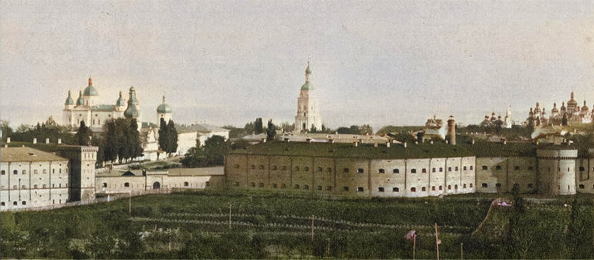

Киев, основанный по преданию в V веке по Рождеству Христову, при первом историческом князе Олеге был столичным городом Киевского княжества и всей Киевской Руси. По сказанию Нестора, столица княжества в IX веке была обнесена земляным валом, составлявшим сомкнутую ограду, длиной до 600 саженей, о том что вал был усилен ещё и деревянной оградой наверху, в точности неизвестно. Позже Ярослав Мудрый для более надёжной обороны сильно расстроившегося города, от нападений неприятеля, построил в 1037 году новую, уже каменную ограду, которая, прикрывая предместья Киева, примыкала своими оконечностями к старой земляной ограде. При Святополке II (1083 — 1113) ограда города была расширена постройкой нового вала, охватившего Михайловский монастырь. Во время владения городом князем Владимиром Ольгердовичем (в конце XIV века) на горе Киселевке был построен укреплённый замок. В период 1676 — 1680 годов, по случаю войны с Турцией, Старые киевские укрепления были исправлены гарнизонными стрельцами и городовыми казаками, в это же время был также наведён через Днепр судовой мост («на стругах и якорях»). В 1698 году по распоряжению гетмана И. Мазепы-Колединского была восстановлена каменная ограда Киево-Печерской лавры. 4 июля 1706 года царь Пётр I приехал в Киев для смотра войск и подготовки крепости-города и древнейшего в России Пустынно-Никольского монастыря к обороне на случай шведской интервенции. Проведя рекогносцировку, он выбрал для крепости новое место размещения (в связи с разросшимся городом) в районе Киево-Печерского монастыря, обнесённого в 1698 — 1700 годах для защиты крепостными стенами с башнями. 15 августа 1706 года в присутствии царя и по его проекту была заложена Печерская крепость, которая после возведения войсками армии графа Шереметьева и запорожскими черкасами укреплений и крепостных сооружений была закончена в 1724 году и позже стала цитаделью Киевской крепости. Крепость стала самым укреплённым опорным пунктом на юге России. В 1722 году в Вооружённых силах империи была учреждена должность генерал-директора над всеми крепостями, подчинявшегося генерал-фельдцейхмейстеру. Магдебургское право города вызывало определённые сложности в содержании старой крепости, до момента выкупа Киева у поляков. Во времена правления Екатерины II, в 1764 году было издано «Положение о Киевской арсенальной команде». В XVIII — XIX веках арсенал Киевской крепости обслуживает и ремонтирует вооружение, включая артиллерийское. Шло время развивалось военное дело и Киевские крепостные сооружения более не удовлетворяли мерам по обороне города от врагов, в связи со значительным расширением границ города, разрушение валов под влиянием природного и человеческого (местная администрация способствовала их уничтожению и плохому содержанию) факторов. «была совершенно запущена и едва выделялась из окружающих ее обывательских домов, ретраншементная линия, построенная еще гр. Минихом, осела, обросла травой, и рвы ее осыпались». — Исследователь Д. Меньшов, Киево-Печерская крепость в 1810 году. В связи с осложнением международной обстановки в мире, 7 марта 1810 года, император Александр I издал приказ, в котором указывалось следующее: «укрепление Печерской горы передать в Инженерное ведомство и удерживать навсегда в исправности, вместе с крепостью»  После посещения Киева будущий император Николай I, поручил разработать генеральный план новой крепости, получивший наименование — Новая Печерская крепость, автором плана был выдающийся военный инженер, генерал-лейтенант Карл Опперман. После утверждения плана, в марте 1830 года, под руководством генерал-лейтенанта О. О. Фреймана строительства началось возведением современных защитных сооружений, которое продолжалось в период 1831 — 1851 годов (некоторые укрепления достраивались до 1872 года, построен дополнительный форт на Лысой горе). В 1860 — 1880-е годы построили сапёрный лагерь, сапёрное шоссе, армейский лагерь на Сырце, военно-окружной суд. Построены линии городской железной дороги (1906 год) и трамвайная ветка (1915 год), расширены городские улицы, сооружено братское военное кладбище (1915 год). С 1886 года крепость перечислена в 3-й класс, 25 апреля 1897 года, с утратой стратегическое значения — в крепость-склад. Упразднена в 1918 году.Киевская крепость была построена в Печерском районе под названием Новая Печерская крепость. Старая и Новая Печерские крепости, стали составлять комплекс Киевской крепости. Сегодня некоторые здания и сооружения восстановлены и содержат музей Киевской крепости, некоторые до сих пор используются как военные склады либо коммерческими предприятиями. Потеряв стратегическое значение в конце XIX века, Киевская крепость использовалась для нужд армии (штабы, склады, казармы), а также как место заключения для преступников. Историко-архитектурный памятник (ныне памятник-музей) «Киевская крепость» основан в 1927 году как филиал Музея истории Киева. Основной фонд музея составляет 17 тысяч экспонатов. Составная часть госпитального укрепления Киевской крепости — Косой капонир — построен в 1844 году как оборонительное сооружение Госпитального укрепления в системе Новой Печерской крепости. Также в состав Киевской крепости входил Лысогорский форт, сооруженный в 1872 году по проекту Э. И. Тотлебена. Лысогорский форт — сложная система бастионов, равелинов, люнетов. В настоящее время многое разрушено для жилищного строительства.
назад